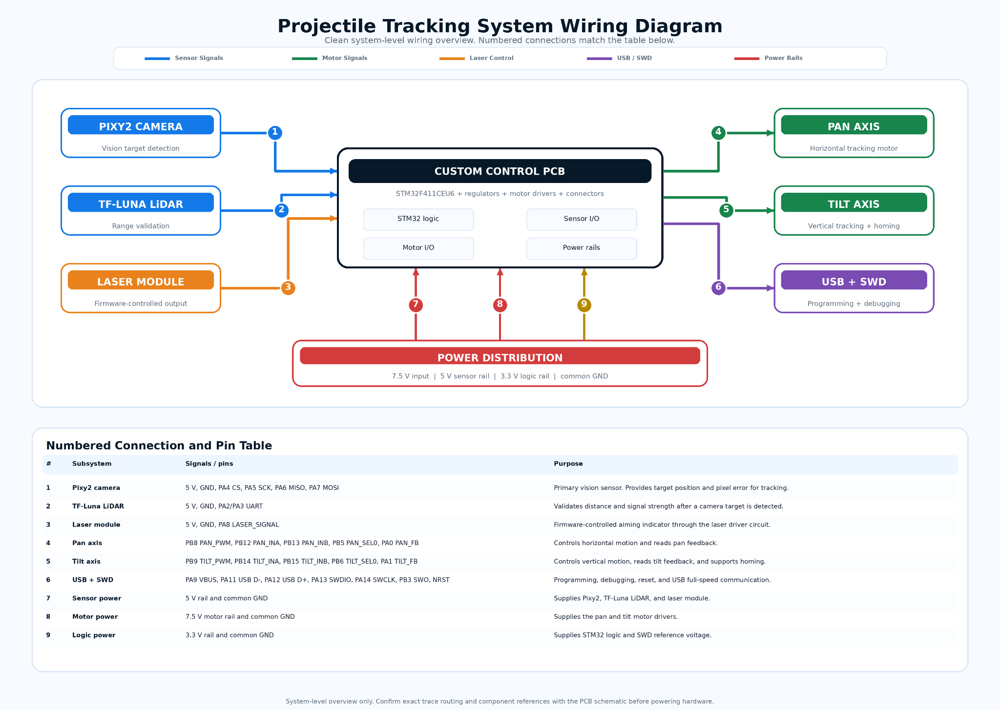
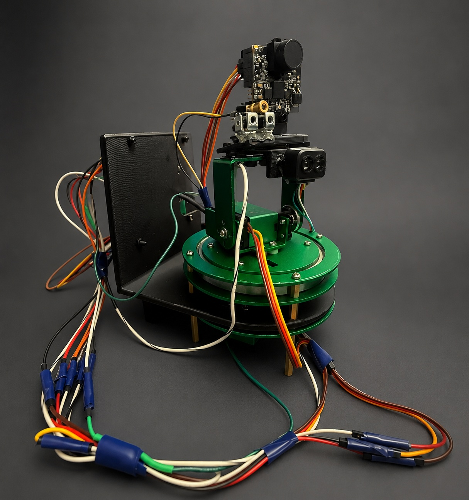
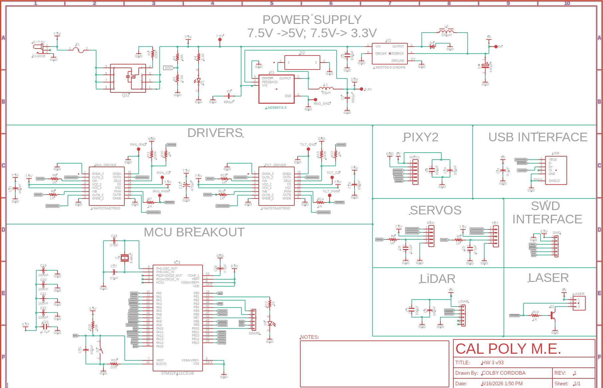
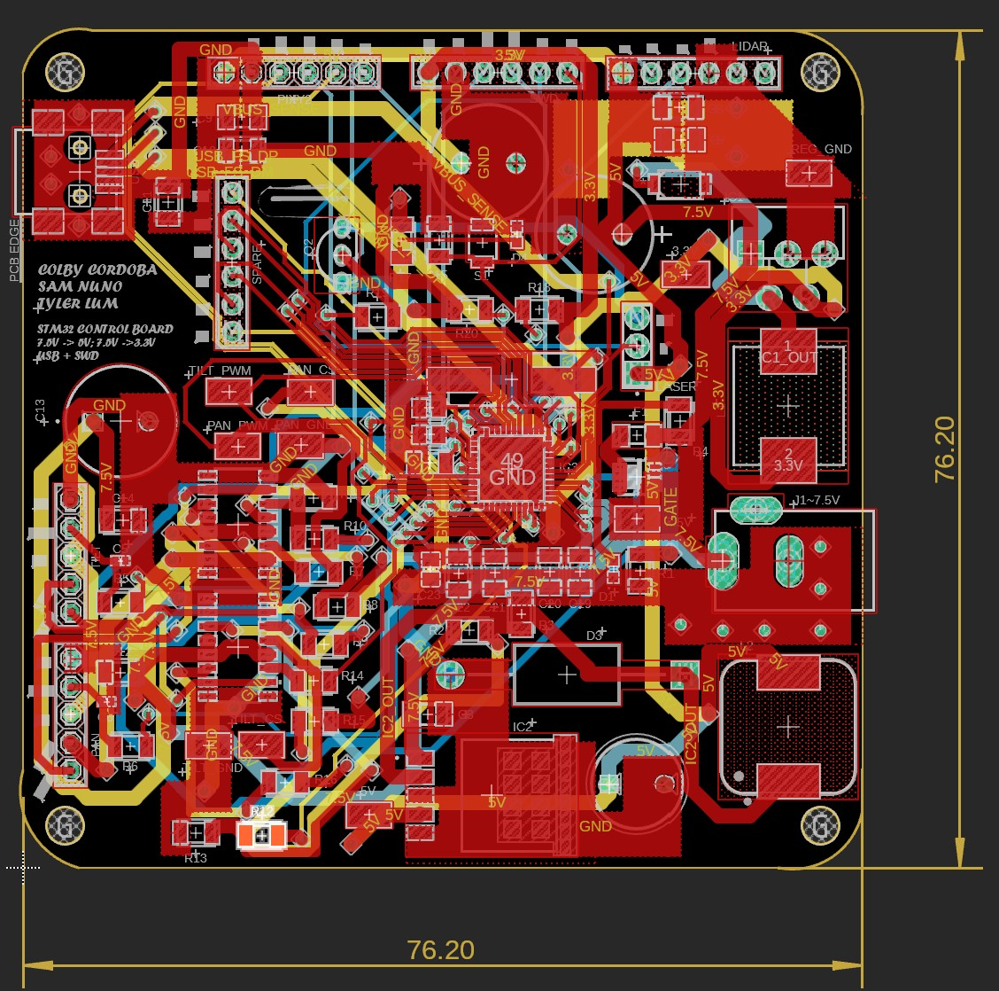
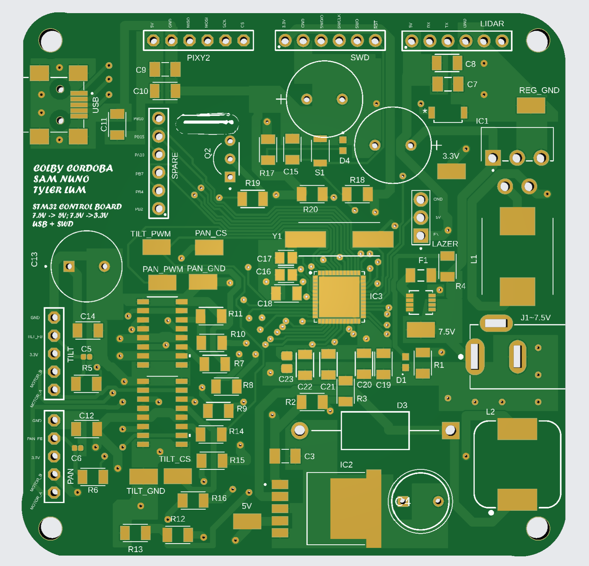
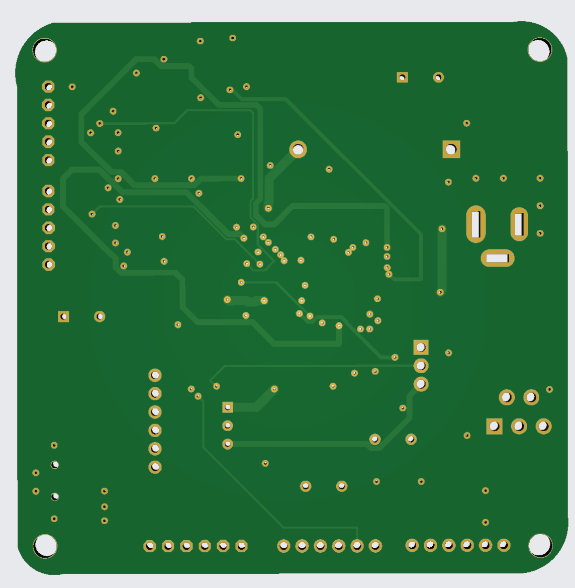
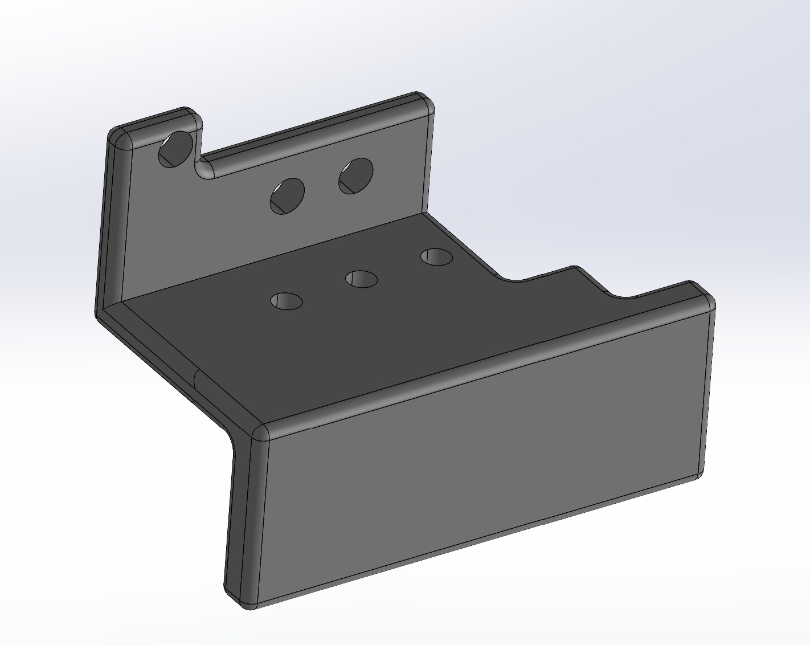
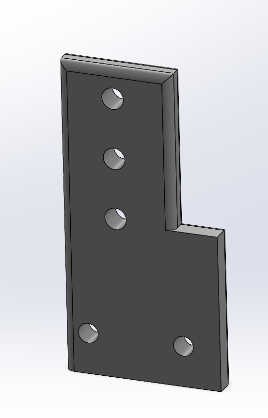
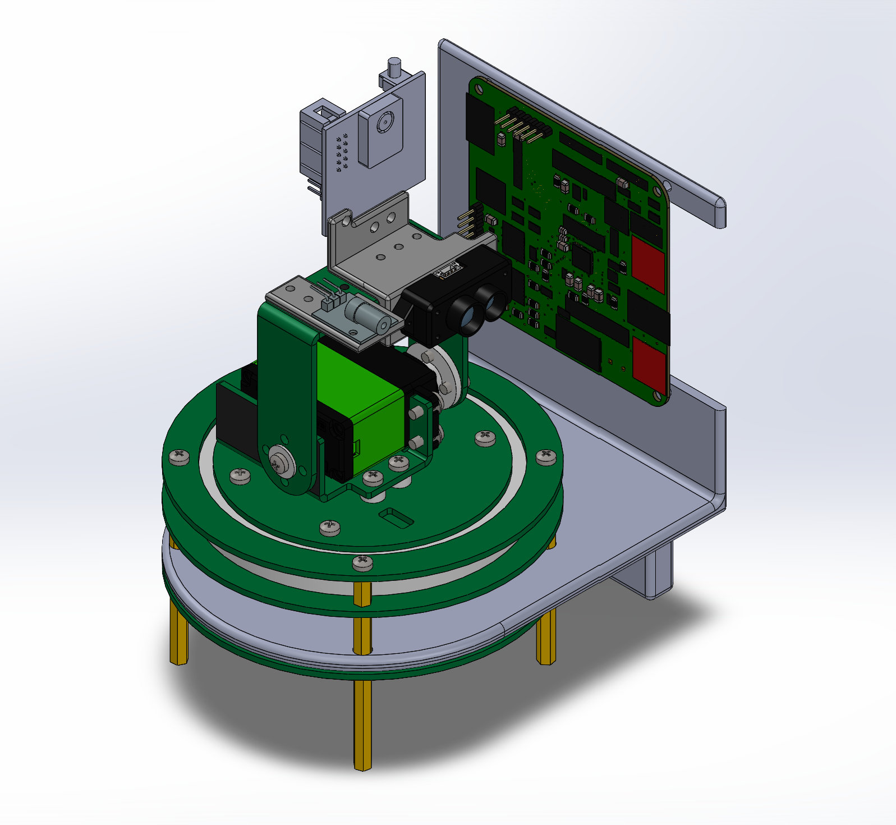

Project Overview
This project focused on creating a projectile tracking system that detects and follows a moving target using data from multiple sensors. A Pixy2 camera provides target position information, while a TF-Luna LiDAR sensor provides distance measurements that help validate whether the target is within the desired tracking range. The goal was to build a complete mechatronic system that combined camera vision, distance sensing, embedded processing, motor control, laser control, and real-time decision making.
The system is centered around an STM32F411CEU6 microcontroller on a custom control PCB. The STM32 receives target-location data from the Pixy2 camera and distance data from the LiDAR sensor, checks whether the sensor readings are valid, determines whether a target is present and within range, and then sends commands to the pan and tilt motors. The project required both hardware integration and software organization because the camera, LiDAR sensor, motor drivers, laser module, power regulation, and communication interfaces all needed to work together reliably.
A major focus of this project was modular embedded software. Instead of placing all logic directly in one file, the code was separated into reusable drivers and control modules. The Pixy2 camera driver handles target detection and pixel error calculation, the LiDAR driver handles distance measurement and validation, the motor driver handles direction and PWM control, the laser driver handles safe laser output control, and the controller module supports tracking, homing, search, and limit-protection behavior.
Overall, the project demonstrates how a microcontroller-based system can combine camera vision, distance sensing, feedback signals, and actuator control to follow a moving target in real time. The final documentation explains the mechanical design, custom PCB, electrical wiring, embedded firmware, sensor processing, tracking behavior, homing behavior, and testing process used to build the projectile tracking system.
Project Objectives
The main objective was to develop a working projectile tracking prototype that could detect, validate, and follow a moving target using coordinated sensor feedback and embedded control. The project was designed to demonstrate full-system mechatronic integration, including camera-based target detection, LiDAR distance validation, embedded firmware development, motor control, custom electronics, mechanical design, laser control, homing behavior, and technical documentation.
Primary Functional Goals
- Use the Pixy2 camera to detect a moving target and determine its position within the camera frame
- Calculate horizontal and vertical pixel error between the detected target and the center of the image
- Read distance measurements from the TF-Luna LiDAR sensor to determine whether the target is within the desired tracking range
- Validate sensor data by checking LiDAR distance limits, signal strength, and target-detection status before using the data in the controller
- Combine camera position feedback and LiDAR distance data to decide whether a valid target condition is present
- Command the pan and tilt motors using PWM and direction signals generated by the STM32 microcontroller
- Adjust the tracking head in real time so the camera, LiDAR sensor, and laser remain aligned with the moving target
- Use ADC feedback signals to support pan/tilt limit protection and controlled homing behavior
- Use SPI for camera communication, UART for LiDAR communication, and GPIO outputs for motor direction and laser control
- Implement target-loss behavior, including stopping, tilt homing, and search-mode target reacquisition
- Control the laser module through firmware and a transistor driver circuit
- Organize the firmware so each subsystem can be tested, debugged, and documented independently
Higher-Level Engineering Goals
- Develop reusable embedded C drivers for the camera, LiDAR sensor, motor driver, laser module, and tracking controller
- Use a modular software architecture instead of one large control loop
- Integrate mechanical, electrical, and software subsystems into one working mechatronic prototype
- Design and assemble a custom PCB to organize power distribution, sensor connections, motor driver signals, and STM32 interfaces
- Create custom mechanical mounts for the Pixy2 camera, TF-Luna LiDAR sensor, laser module, PCB, and pan/tilt assembly
- Improve system reliability by separating sensing, validation, control, actuation, homing, laser control, and debugging responsibilities across the firmware
- Document the embedded firmware with Doxygen so source files, functions, data structures, and interfaces are easier to understand
- Validate the complete system through live tracking and homing demonstrations
- Create a project portfolio that explains the design process, system architecture, wiring, code structure, testing, and final results
System Parameters
The table below summarizes the major hardware, firmware, sensing, control, and communication parameters for the camera-guided projectile tracking system.
| Parameter | Value |
|---|---|
| Controller | STM32F411CEU6 microcontroller |
| Programming Language | Embedded C using STM32 HAL |
| Main Target Sensor | Pixy2 camera for image-based target detection |
| Distance Sensor | TF-Luna LiDAR sensor for distance measurement and range validation |
| Camera Interface | SPI1 with GPIO chip select |
| LiDAR Interface | USART2 UART, 115200 baud |
| Target Signature | Pixy2 color signature 1 |
| Camera Frame Size | 316 px × 208 px |
| Image Center | X = 158 px, Y = 104 px |
| Camera Deadband | ±18 px in both X and Y |
| Minimum Target Area | 30 px² |
| Actuation | Pan and tilt motor control |
| Motor Driver | Pan and tilt VNH7070ASTRSO driver circuits |
| Motor Control Signals | PWM, INA, INB, SEL0, motor output, feedback, and ground connections |
| PWM Timer | TIM4 |
| Pan PWM Channel | TIM4 Channel 3 / PB8 |
| Tilt PWM Channel | TIM4 Channel 4 / PB9 |
| Pan Direction Pins | PB12 / PAN_INA and PB13 / PAN_INB |
| Tilt Direction Pins | PB14 / TILT_INA and PB15 / TILT_INB |
| Motor Select Pins | PB5 / PAN_SEL0 and PB6 / TILT_SEL0 |
| Pan/Tilt Feedback | PA0 / PAN_FB and PA1 / TILT_FB ADC inputs |
| LiDAR Valid Distance Range | 20 cm to 800 cm |
| Minimum Valid LiDAR Signal Strength | 1 |
| Laser Range Threshold | 300 cm in controller logic |
| Laser Control | PA8 / LASER_SIGNAL GPIO through transistor driver circuit |
| Main Input Supply | 7.5 V input |
| Regulated Rails | 5 V module rail and 3.3 V STM32 logic rail |
| Programming and Debugging | SWD interface, USB interface, UART debugging support |
| Software Documentation | Doxygen HTML output |
| Development Environment | STM32CubeIDE / CubeMX |
These parameters reflect the updated camera-guided tracking architecture, including Pixy2 vision, TF-Luna LiDAR range validation, pan/tilt motor control, laser control, custom PCB power regulation, and STM32 firmware organization.
Build Guide
This section outlines the major steps required to assemble, wire, program, and test the projectile tracking prototype. The system combines a pan/tilt mechanical assembly, custom PCB, STM32 controller, Pixy2 camera, TF-Luna LiDAR sensor, laser module, motor drivers, and supporting power and communication wiring.
1. Assemble the Pan/Tilt Structure
Mount the pan and tilt axes so the tracking head can rotate smoothly in both horizontal and vertical directions. The structure should be rigid enough to reduce vibration but light enough for the motors to respond quickly. Verify that the rotating components do not interfere with wiring, brackets, or the PCB mount.
2. Mount the Camera, LiDAR Sensor, and Laser Module
Install the Pixy2 camera, TF-Luna LiDAR sensor, and laser module on the tracking head so they are aligned with the same target direction. The camera should have a clear field of view, the LiDAR should face the expected target path without obstruction, and the laser should be mounted so it points toward the same aiming reference as the sensors.
3. Install the Custom PCB and STM32 Controller
Mount the custom PCB securely to the system frame and connect the STM32 controller so USB, SWD programming, and debugging connections remain accessible. The PCB organizes power distribution, sensor connectors, motor driver signals, laser control, and communication lines between the tracking hardware and the microcontroller.
4. Wire the Power, Ground, and Motor Driver Connections
Connect the 7.5 V input supply, onboard 5 V and 3.3 V rails, and the common ground shared by the STM32, sensors, PCB, laser module, and motor drivers. Wire the pan and tilt motor driver inputs to the STM32 PWM, direction, and select pins. Before running the full tracking code, test each motor independently to confirm correct direction and speed response.
5. Connect Sensor and Communication Interfaces
Connect the TF-Luna LiDAR sensor using its UART transmit, receive, power, and ground lines. Connect the Pixy2 camera using the SPI clock, MISO, MOSI, chip-select, power, and ground connections. Confirm that all voltage levels are compatible with the STM32 and that each sensor has a stable power and ground connection.
6. Connect and Test the Laser Module
Wire the laser module to the PCB and STM32-controlled transistor driver circuit. Test the laser separately before enabling tracking behavior to confirm that it can be turned on and off safely through firmware. The laser control signal should be tested independently from the camera and motor control loop.
7. Upload and Verify Firmware
Build and flash the STM32 firmware using STM32CubeIDE. Begin with subsystem-level tests, including motor-only motion, camera target detection, LiDAR distance readings, laser on/off control, ADC feedback checks, and UART debug output. After each subsystem works independently, enable the full tracking control loop.
8. Calibrate Sensor Alignment and Tracking Response
Align the camera, LiDAR sensor, and laser so they point toward the same target reference. Test the LiDAR at known distances, verify that invalid measurements are rejected, confirm that the Pixy2 camera correctly reports target position, and tune the tracking response so the pan/tilt assembly moves smoothly toward the detected target without excessive overshoot or vibration.
9. Perform Full System Testing
Run live tracking tests with moving targets to verify that the camera detects the object, the STM32 calculates tracking error, the motor drivers command the pan/tilt mechanism, the homing/search behavior responds correctly when the target is lost, and the laser control behaves as expected during demonstrations.
CAD Models and Custom Parts
The projectile tracking system was designed in SolidWorks and includes a full system assembly along with three custom mounting components for the camera/LiDAR sensors, laser module, and PCB.
Wiring Diagram and Pin Layout
The projectile tracking system combines camera vision, LiDAR sensing, laser control, motor drivers, feedback signals, STM32 firmware, and custom PCB power distribution. The wiring should be checked carefully because incorrect power, ground, UART, SPI, GPIO, or motor-driver connections can damage the controller or connected modules.
Wiring Diagram

Figure 1. Wiring diagram showing the custom STM32 control PCB, Pixy2 camera, TF-Luna LiDAR sensor, laser module, pan/tilt motor assembly, USB/SWD programming interface, and shared power distribution network.
Pin Layout Table
| Subsystem | Signal / Net | STM32 Pin / Peripheral | Notes |
|---|---|---|---|
| STM32 MCU | MCU | STM32F411CEU6 | Main embedded controller for sensor input, motor control, laser control, USB, SWD, and debugging |
| STM32 MCU | VDD | 3.3 V | Main digital logic supply |
| STM32 MCU | VDDA / VREF+ | 3.3 V | Analog/reference supply |
| STM32 MCU | VSS / VSSA | GND | Digital and analog ground reference |
| STM32 MCU | PH0 / PH1 | 8 MHz oscillator circuit | External crystal oscillator input and output |
| STM32 MCU | NRST | Reset circuit / SWD reset | Used for reset button and programming reset |
| STM32 MCU | BOOT0 | Boot configuration | Boot mode selection input |
| Pixy2 Camera | PIXY_CS | PA4 / GPIO chip select | SPI chip-select signal for the Pixy2 camera |
| Pixy2 Camera | PIXY_SCK | PA5 / SPI1 SCK | SPI clock signal from STM32 to Pixy2 camera |
| Pixy2 Camera | PIXY_MISO | PA6 / SPI1 MISO | Camera data sent from Pixy2 to STM32 |
| Pixy2 Camera | PIXY_MOSI | PA7 / SPI1 MOSI | Command/data signal from STM32 to Pixy2 camera |
| Pixy2 Camera | 5 V | 5 V module rail | Regulated camera power from the PCB |
| Pixy2 Camera | GND | System ground | Common ground reference for SPI communication |
| TF-Luna LiDAR Sensor | LIDAR_RX | PA2 / USART2 TX | STM32 transmit line connected to the LiDAR receive path |
| TF-Luna LiDAR Sensor | LIDAR_TX | PA3 / USART2 RX | LiDAR transmit line connected to the STM32 receive path |
| TF-Luna LiDAR Sensor | 5 V | 5 V module rail | Regulated LiDAR sensor power from PCB |
| TF-Luna LiDAR Sensor | GND | System ground | Common ground reference for LiDAR UART communication |
| Laser Module | LASER_EN / LASER_SIGNAL | PA8 / GPIO output | STM32 output that drives the laser control transistor |
| Laser Module | 5 V | 5 V module rail | Laser module supply voltage |
| Laser Module | Switched control path | Q2 transistor circuit | Laser is controlled through a transistor driver circuit |
| Laser Module | GND | System ground | Ground reference for the laser driver circuit |
| Pan Motor Assembly | PAN_MOTOR_A | Pan motor driver output | Motor output connection to pan actuator |
| Pan Motor Assembly | PAN_MOTOR_B | Pan motor driver output | Motor output connection to pan actuator |
| Pan Motor Assembly | 7.5 V | Motor supply rail | Motor power supplied to pan assembly |
| Pan Motor Assembly | PAN_FB | PA0 / ADC channel 0 | Pan-axis feedback signal routed back to STM32 |
| Pan Motor Assembly | GND | System ground | Common ground reference for pan motor and feedback signal |
| Tilt Motor Assembly | TILT_MOTOR_A | Tilt motor driver output | Motor output connection to tilt actuator |
| Tilt Motor Assembly | TILT_MOTOR_B | Tilt motor driver output | Motor output connection to tilt actuator |
| Tilt Motor Assembly | 7.5 V | Motor supply rail | Motor power supplied to tilt assembly |
| Tilt Motor Assembly | TILT_FB | PA1 / ADC channel 1 | Tilt-axis feedback signal routed back to STM32 |
| Tilt Motor Assembly | GND | System ground | Common ground reference for tilt motor and feedback signal |
| Pan Motor Driver | PAN_INA | PB12 / GPIO output | Pan motor direction control input A |
| Pan Motor Driver | PAN_INB | PB13 / GPIO output | Pan motor direction control input B |
| Pan Motor Driver | PAN_PWM | PB8 / TIM4 CH3 | PWM speed command for pan motor |
| Pan Motor Driver | PAN_SEL0 | PB5 / GPIO output | Pan motor driver mode select / enable signal |
| Pan Motor Driver | PAN_CS | Driver current-sense output | Current-sense output from pan motor driver circuit |
| Pan Motor Driver | PAN_GND | Driver ground | Ground reference for pan driver power stage |
| Tilt Motor Driver | TILT_INA | PB14 / GPIO output | Tilt motor direction control input A |
| Tilt Motor Driver | TILT_INB | PB15 / GPIO output | Tilt motor direction control input B |
| Tilt Motor Driver | TILT_PWM | PB9 / TIM4 CH4 | PWM speed command for tilt motor |
| Tilt Motor Driver | TILT_SEL0 | PB6 / GPIO output | Tilt motor driver mode select / enable signal |
| Tilt Motor Driver | TILT_CS | Driver current-sense output | Current-sense output from tilt motor driver circuit |
| Tilt Motor Driver | TILT_GND | Driver ground | Ground reference for tilt driver power stage |
| USB Interface | VBUS_SENSE | PA9 / USB VBUS sense | Detects USB VBUS connection |
| USB Interface | USB_FS_DM | PA11 / USB D- | USB full-speed negative data line |
| USB Interface | USB_FS_DP | PA12 / USB D+ | USB full-speed positive data line |
| USB Interface | GND / Shield | System ground | USB ground and shield reference |
| SWD Programming Interface | SWDIO | PA13 / SWDIO | Serial Wire Debug data line for programming and debugging |
| SWD Programming Interface | SWCLK | PA14 / SWCLK | Serial Wire Debug clock line |
| SWD Programming Interface | SWO | PB3 / SWO | Serial Wire Output debug trace signal |
| SWD Programming Interface | RST | NRST | Reset line for programming and debugging |
| SWD Programming Interface | 3.3 V | 3.3 V reference | Voltage reference for the debugger/programmer |
| SWD Programming Interface | GND | System ground | Debugger ground reference |
| Power Input | 7.5 V input | External barrel/input connector | Main input supply for motors and onboard regulators |
| Power Input | F1 | Input fuse | Input protection before power distribution |
| Power Regulation | 5 V rail | LM2575S-5.0 regulator output | Regulated 5 V supply for external modules |
| Power Regulation | 3.3 V rail | LM2596T-3.3 regulator output | Regulated 3.3 V logic supply for STM32 |
| Power Monitoring | ADC | PB0 / ADC input | Schematic-routed voltage monitoring input |
| Spare / Expansion Header | PA10, PA15, PB1, PB2, PB4, PB7, PB10 | Spare STM32 signals | Routed for expansion or future testing |
| System Grounding | Common Ground | GND | All modules share a common ground for reliable communication, sensing, and motor control |
This table is based on the schematic net labels and the CubeMX-generated STM32 pin definitions. It documents the main connections between the STM32F411CEU6, Pixy2 camera, TF-Luna LiDAR sensor, laser module, pan/tilt motor assemblies, motor drivers, USB interface, SWD programming header, power regulators, and spare expansion pins.
Mechanical & Electrical Design
Mechanical Design Overview
The mechanical design is based on a two-axis pan/tilt tracking head that allows the system to rotate horizontally and vertically while keeping the sensing and aiming hardware aligned on one compact assembly. The Pixy2 camera, TF-Luna LiDAR sensor, and laser module are mounted together so the camera can locate the target, the LiDAR can validate target distance, and the laser can point along the same tracking direction.
Sensor alignment was an important part of the mechanical design. The camera needed a clear field of view for target detection, the LiDAR needed an unobstructed path for distance measurement, and the laser needed to be positioned so it remained aligned with the tracking head. Custom mounts were designed to hold the camera, LiDAR sensor, laser module, custom PCB, and pan/tilt structure securely while reducing vibration and keeping the moving assembly compact.
The pan/tilt mechanism uses separate pan and tilt motor assemblies to move the tracking head in two directions. The pan axis rotates the system left and right, while the tilt axis adjusts the vertical aim. This layout allows the system to follow a moving target by continuously adjusting the orientation of the camera, LiDAR sensor, and laser together.
Electrical Design
The electrical system is centered around an STM32F411CEU6 microcontroller on a custom control PCB. The PCB organizes the power regulation, sensor connectors, motor driver circuits, USB interface, SWD programming header, laser driver circuit, and signal routing between the STM32 and external hardware.
The Pixy2 camera communicates with the STM32 through SPI and provides target position information inside the camera frame. The TF-Luna LiDAR sensor communicates through UART and provides distance measurements used to validate whether the detected target is within the desired tracking range. The STM32 combines camera target data, LiDAR distance data, and tracking logic to determine how the pan and tilt motors should move.
Motor control is handled through dedicated pan and tilt motor driver circuits. The STM32 sends PWM signals for speed control and GPIO direction signals to command each axis. The schematic also includes feedback signals for the pan and tilt assemblies, allowing the system hardware to route position or feedback information back to the controller. The motor drivers handle the higher-current motor load, while the STM32 provides only low-power command signals.
The laser module is controlled through a transistor driver circuit instead of being driven directly by the STM32 pin. This allows the firmware to enable or disable the laser through a dedicated laser-control output while keeping the microcontroller protected from the laser load.
Power distribution is handled on the custom PCB. The system uses a main 7.5 V input supply, with onboard regulation to generate 5 V for external modules and 3.3 V for STM32 logic. A common ground is shared between the STM32, Pixy2 camera, TF-Luna LiDAR sensor, motor drivers, laser module, USB interface, and programming header to ensure reliable communication and control.
Major Hardware
- STM32F411CEU6 microcontroller: main embedded controller for sensor processing, communication, tracking logic, motor commands, laser control, USB, and debugging
- Custom control PCB: routes power, ground, sensor signals, motor driver signals, USB, SWD programming, laser control, and spare expansion connections
- Pixy2 camera: detects the moving target and provides image-based target position data over SPI
- TF-Luna LiDAR sensor: measures target distance and helps validate whether the detected object is within the tracking range
- Pan motor assembly: rotates the tracking head horizontally and includes routed motor and feedback connections
- Tilt motor assembly: rotates the tracking head vertically and includes routed motor and feedback connections
- Motor driver circuits: convert STM32 PWM and GPIO direction signals into higher-current pan and tilt motor outputs
- Laser module: provides an aiming reference and is controlled through a transistor driver circuit
- Power regulation circuit: converts the main 7.5 V input into regulated 5 V and 3.3 V rails for the system electronics
- USB and SWD interfaces: support communication, programming, and debugging of the STM32 firmware

Figure 2. Fully assembled projectile tracking prototype showing the pan/tilt mechanism, Pixy2 camera, TF-Luna LiDAR sensor, laser module, custom PCB, wiring, and supporting mechanical structure.
Electrical Schematic and PCB Wiring
The schematic and PCB wiring diagrams show how the custom control board routes power, sensor connections, motor-driver signals, USB, SWD programming, laser control, and STM32 I/O. These diagrams support the expanded pin table by showing the physical and electrical relationships between the main hardware blocks.
Electrical Schematic

Figure 6. Complete electrical schematic showing power regulation, STM32F411CEU6 connections, motor drivers, Pixy2 interface, TF-Luna LiDAR interface, laser driver circuitry, USB communication, and SWD programming connections.
PCB Wiring Diagram

Figure 7. PCB layout and wiring view showing routed power, signal, sensor, motor-driver, laser, USB, and SWD connections on the custom control board.
Tracking Calculations and Sensor Processing
Several calculations were performed within the firmware to convert camera target data, feedback readings, and sensor measurements into motor commands capable of tracking a moving target. The system uses Pixy2 camera vision as the primary target-location input, TF-Luna LiDAR distance data as a range-validation input, and pan/tilt feedback readings to support homing and limit protection.
Camera Pixel Error Calculation
The Pixy2 camera reports target blocks in image coordinates. The firmware selects the best target block, compares its position to the center of the image, and calculates horizontal and vertical pixel error:
x_error = target_x - image_center_x; y_error = target_y - image_center_y;
These error values indicate how far the target is from the desired center point and serve as the main inputs for pan and tilt motion.
Target Filtering
The camera driver filters detections by color signature and minimum target area. If multiple valid targets are present, the firmware selects the largest valid block as the target to follow.
area = target_width * target_height; accept target if signature matches and area >= minimum_target_area;
Camera-Based Motor Command Generation
The main tracking loop uses camera pixel error, deadbands, speed offsets, command limits, and smoothing before applying motor commands:
if abs(x_error) > x_deadband:
pan_speed = -x_error * gain;
if abs(y_error) > y_deadband:
tilt_speed = y_error * gain;
command = smoothed_previous_command + new_command;
This approach helps the mechanism move toward the target while reducing sudden changes in speed.
Motor Command Limiting
Motor commands are limited to prevent aggressive motion and reduce overshoot or vibration:
if command > MAX_SPEED:
command = MAX_SPEED;
if command < -MAX_SPEED:
command = -MAX_SPEED;
ADC Feedback and Homing Logic
Pan and tilt feedback signals are read using ADC inputs. These readings are used for limit protection and tilt homing. When the target is lost for a long enough period, the firmware returns the tilt axis toward a known vertical home range before allowing broader search behavior.
if tilt_adc is above home range:
move tilt toward center;
else if tilt_adc is below home range:
move tilt toward center in opposite direction;
else:
stop tilt motor;
LiDAR Distance Validation
The TF-Luna LiDAR driver decodes UART frames, validates the checksum, and checks distance and signal strength before marking a measurement as usable:
20 cm <= distance <= 800 cm signal_strength >= minimum_threshold
Distance information is used as a range-validation input so the system can determine whether the detected target is within an acceptable operating range.
Target Centering and Laser Logic
The camera driver provides a centered check based on the configured X and Y deadbands. This centered condition can be combined with LiDAR range validation to decide when the laser output should be enabled.
target_centered =
target_detected &&
abs(x_error) < x_deadband &&
abs(y_error) < y_deadband;
Closed-Loop Tracking Behavior
The tracking process operates as a continuous real-time feedback loop:
Pixy2 Target Detection
↓
Pixel Error Calculation
↓
Motor Command Generation
↓
ADC Limit Protection + Command Smoothing
↓
PWM + Direction Output
↓
Pan/Tilt Motion
↓
Updated Camera View
Software Implementation
Architecture
The firmware was written using a modular embedded C architecture so each major subsystem could be developed, tested, and documented independently. The main program initializes the STM32 system clock, GPIO, timers, PWM outputs, UART, SPI, ADC, camera interface, LiDAR interface, laser control, motor driver module, and tracking controller support functions before running the camera-driven tracking loop.
The software is organized around a sensor-driven control loop. The Pixy2 camera provides the primary target position data, the TF-Luna LiDAR driver provides validated range measurements, ADC feedback supports pan/tilt limits and homing, and the motor driver converts tracking commands into PWM and direction outputs. Separating camera processing, distance validation, motor control, laser control, feedback handling, and tracking logic made the firmware easier to debug and document with Doxygen.
Pixy2 Camera Driver
The Pixy2 camera driver communicates with the camera over SPI, sends getBlocks requests, validates response packets, decodes color-connected-component blocks, filters by the selected target signature, rejects targets below the minimum area, and selects the largest valid target. The selected target is converted into horizontal and vertical pixel error relative to the image center.
LiDAR Driver
The TF-Luna LiDAR driver handles UART frame reception, frame-header detection, checksum validation, distance decoding, signal-strength checks, temperature decoding, and status reporting. In the system architecture, LiDAR is used as a distance-validation sensor rather than the primary tracking input.
Tracking, Homing, and Search Behavior
The main tracking loop uses camera target data to generate pan and tilt commands. When the target is detected, the firmware applies image deadbands, speed offsets, command clamps, ADC-based limit protection, and smoothing before commanding the pan and tilt motors. When the target is temporarily lost, the system briefly stops the motors to avoid reacting to camera flicker. If target loss continues, the firmware homes the tilt axis toward its vertical reference, and after a longer loss period it enters search mode to help reacquire the target.
The controller module also provides PID-based update support, pan/tilt ADC reading functions, tilt homing functions, pan and tilt limit protection, and search-mode behavior. These functions keep homing, limit protection, and tracking support logic separate from low-level motor driver code.
Motor Driver
The motor driver abstracts the pan and tilt motor commands. The tracking code sends signed speed commands, and the motor driver clamps each command to the timer range, determines motor direction, and applies the PWM compare value to TIM4 Channel 3 for pan and TIM4 Channel 4 for tilt. Positive and negative values move each axis in opposite directions, while zero stops the motor.
Laser Control
The laser module is controlled through a dedicated firmware interface and transistor driver circuit. The laser driver provides initialization, on, off, toggle, and blink-test functions. Keeping the laser in its own module allows the laser hardware to be tested independently from the camera, LiDAR, and motor subsystems.
Debugging and Test Support
The firmware structure supports debugging by separating camera detection, LiDAR measurement, motor commands, laser output, ADC feedback, homing behavior, and error handling into independent modules. This made it easier to isolate whether an issue came from target detection, sensor communication, wiring, motor output, feedback limits, or laser control.
Click to view simplified software flow
Pixy2 Camera → pixy2_camera.c → target block data → pixel error calculation → camera-driven tracking loop
TF-Luna LiDAR → LiDAR.c → valid distance and signal strength → range-validation support
ADC Feedback → controller.c → pan/tilt feedback readings → homing and limit protection
Tracking Logic → target detected / target lost → motor commands, tilt homing, search behavior, and laser state
Motor Driver → motor_driver.c → PWM and direction outputs → pan/tilt motor motion
Laser Driver → Laser.c → laser GPIO output and laser test functions
Code Architecture and File-by-File Implementation
The firmware is organized into separate source and header files so each subsystem has a clear responsibility. This structure makes the project easier to debug, test, expand, and document with Doxygen. Instead of placing all functionality inside one file, the system separates initialization, camera processing, LiDAR communication, motor control, laser control, feedback handling, homing, search behavior, and high-level tracking behavior into dedicated modules.
Main Integration Files
main.c
The main file acts as the central integration layer for the firmware. It initializes the STM32 system clock, GPIO, TIM4 PWM, SPI1, USART2, TIM3, ADC1, the laser module, LiDAR object, motor driver, Pixy2 camera, and controller support logic. The main loop performs the camera-driven tracking behavior, applies X/Y error corrections, handles target loss, performs tilt homing and search behavior, smooths motor commands, applies ADC limit protection, and controls the laser state.
main.h
This CubeMX-generated header defines the project pin map used throughout the firmware. It includes the Pixy2 SPI chip-select and SPI pins, laser signal pin, pan and tilt direction pins, and motor-driver select pins.
High-Level Controller Files
controller.h
This header declares the tracking controller interface, including initialization, update, reset, ADC feedback reading, tilt homing, limit protection, and search-mode functions.
controller.c
This source file implements PID helper functions, pan and tilt ADC feedback reading, tilt homing, pan/tilt limit protection, search mode, and optional full controller update behavior. It supports homing the tilt axis to a known vertical range, stopping pan motion during tilt homing, reversing pan search direction near feedback limits, and combining camera target data with LiDAR range validation and laser enable logic.
Pixy2 Camera Driver Files
pixy2_camera.h
This header defines the Pixy2 frame size, image center, target deadbands, minimum target area, target signature, maximum block count, raw block structure, processed target structure, and public camera functions.
pixy2_camera.c
This source file implements SPI communication with the Pixy2 camera. It sends getBlocks requests, searches for valid response sync bytes, validates packet type and checksum, decodes target blocks, filters blocks by target signature and area, selects the largest valid target, calculates x/y error relative to the image center, and checks whether the target is centered.
LiDAR Driver Files
LiDAR.h
This header defines the LiDAR measurement structure, status enum, valid distance limits, minimum signal strength, and public functions for initialization, frame reading, measurement validation, object detection, and status-string reporting.
LiDAR.c
This source file implements TF-Luna LiDAR UART communication. It searches for the two 0x59 frame header bytes, receives the full 9-byte frame, validates the checksum, decodes distance, signal strength, and temperature, marks the measurement as valid only if it passes the range and signal-strength checks, and returns readable status codes for debugging.
Motor Driver Files
motor_driver.h
This header provides the public interface for initializing and commanding the pan and tilt motors. It exposes functions for motor-driver initialization, pan motor command, tilt motor command, and stopping both motors.
motor_driver.c
This source file starts TIM4 PWM outputs, enables the motor-driver select pins, and implements signed speed commands for the pan and tilt motors. It converts command sign into INA/INB direction states and command magnitude into PWM compare values. Pan uses TIM4 Channel 3, and tilt uses TIM4 Channel 4.
Laser Control Files
Laser.h
This header defines the public interface for the laser module. It provides function prototypes to initialize, enable, disable, toggle, and blink the laser output.
Laser.c
This source file implements the laser GPIO control logic using the CubeMX-generated LASER_SIGNAL output. The module starts with the laser off, supports on/off control, and includes toggle and blink functions for bench testing.
How the Files Work Together
The Pixy2 camera driver provides target position data and pixel error values. The LiDAR driver provides validated distance and signal-strength data. The controller module provides ADC feedback reading, homing, search, and limit-protection functions. The motor driver converts pan/tilt commands into PWM and direction outputs. The laser driver controls the laser output. The main file initializes all modules and runs the loop that combines target detection, tracking, target-loss handling, homing, search behavior, and actuator control.
Click to view module interaction summary
main.c initializes the STM32 peripherals and runs the camera-driven tracking loop.
pixy2_camera.c reads Pixy2 blocks, selects the largest valid target, and calculates image-based tracking error.
LiDAR.c reads and validates TF-Luna distance measurements.
controller.c provides PID support, pan/tilt ADC feedback, limit protection, tilt homing, search behavior, and optional range-gated laser logic.
motor_driver.c converts pan/tilt commands into PWM and direction outputs.
Laser.c controls the laser output and provides test functions.
Detailed Code Documentation
The links below open the Doxygen-generated documentation pages for the main project source files. These pages document the project drivers, data structures, function descriptions, parameters, return values, and source-code references.
Main Application and Driver Documentation
- main.c – Main control loop, PID tracking logic, peripheral initialization, and system integration.
- controller.h – Declares the high-level tracking controller interface, including initialization, update, and reset functions.
- controller.c – Implements the pan/tilt PID tracking logic, reads Pixy2 target data, checks LiDAR range, commands the motors, and enables the laser only when the target is centered and in range.
- LiDAR.h – Public LiDAR driver interface, measurement structure, status enum, valid range macros, and function prototypes.
- LiDAR.c – TF-Luna LiDAR UART frame reading, checksum validation, object detection, and status reporting.
- motor_driver.h – Public motor driver interface for pan and tilt motor commands.
- motor_driver.c – PWM setup, motor direction control, pan motor command, tilt motor command, and stop behavior.
- pixy2_camera.h – Pixy2 camera target structures, constants, and function prototypes.
- pixy2_camera.c – SPI communication, Pixy2 block reading, target selection, and pixel error calculation.
- Laser.h – Public laser module interface.
- Laser.c – Laser GPIO control, on/off/toggle behavior, and blink test function.
Complete Doxygen Documentation
The full Doxygen site includes file references, source-code navigation, function documentation, data structures, and generated links back to the original code.
View Full Doxygen Documentation View File List View Data StructuresSystem Diagrams and Additional Analysis
System-level diagrams help explain how the camera, LiDAR sensor, STM32 firmware, motor drivers, laser module, and pan/tilt hardware interact. The updated flow below focuses on the actual camera-guided tracking behavior, target-loss response, homing behavior, and motor command generation.
High-Level System Diagram

Figure 8. High-level system architecture showing Pixy2 camera input, TF-Luna LiDAR range validation, STM32 processing, motor-driver outputs, laser control, and pan/tilt actuation.
Software Flow Diagram
System Startup
↓
Initialize STM32 Peripherals
(GPIO, TIM4 PWM, TIM3 timing, SPI1, USART2, ADC1)
↓
Initialize Project Modules
(Laser, TF-Luna LiDAR, Motor Driver, Pixy2 Camera, Controller)
↓
Home Tilt Axis to Vertical Reference
↓
Read Pixy2 Camera Target Blocks
↓
Apply X/Y Offset Correction
↓
Target Detected?
┌────────────── No ──────────────┐
↓ ↓
Laser Off Compute Camera Pixel Error
Increase Lost Count x_error, y_error
↓ ↓
Lost Count < 8? Apply Deadbands
↓ ↓
Stop Pan/Tilt Motors Generate Pan/Tilt Speed Commands
↓
Lost Count 8 to 24? Clamp Speed Commands
↓ ↓
Home Tilt Axis Apply ADC Limit Protection
Keep Pan Stopped ↓
Smooth Commands
Lost Count ≥ 25? ↓
↓ Apply PWM + Direction Outputs
Run Search Mode to Pan/Tilt Motor Drivers
(Tilt home first, then pan scan) ↓
Laser On During Target Tracking
↓
Repeat Real-Time Loop
Figure 9. Updated software flow showing camera-based target detection, pixel-error control, ADC limit protection, command smoothing, target-loss handling, tilt homing, search behavior, laser control, and pan/tilt motor output generation.
Why These Diagrams Matter
These diagrams provide a high-level overview of the firmware architecture and system operation. They show that the Pixy2 camera is the primary target-tracking input, while the TF-Luna LiDAR supports distance validation. The STM32 processes sensor information, runs tracking and homing behavior, controls the laser output, and commands the pan/tilt mechanism through PWM and direction signals.
Analysis and Results
Overall Performance
The final prototype demonstrated the core behavior required for a camera-guided projectile tracking system. The Pixy2 camera detected the target, calculated the target position relative to the center of the image, and provided the primary feedback used to command the pan/tilt mechanism. The STM32 processed this camera data in real time, generated motor commands, and adjusted the tracking head to follow the moving target.
Camera Vision Performance
The Pixy2 camera was the main sensing input for target detection and tracking. The camera identified target blocks based on the selected color signature, filtered out small detections, selected the largest valid target, and calculated horizontal and vertical pixel error from the center of the camera frame. These pixel error values were used to determine how far the pan and tilt axes needed to move.
Tracking and Homing Behavior
The system responded to camera target data by moving the pan and tilt motors to reduce image error and keep the target centered. When the target was temporarily lost, the firmware stopped the motors briefly to avoid reacting to noise or camera flicker. If the target remained lost, the system began returning the tilt axis toward its home position, and after a longer loss period it entered a search behavior to help reacquire the target.
Motor Response
The pan and tilt motors responded to signed speed commands generated from camera pixel error. The firmware applied deadbands, speed limits, command smoothing, and ADC-based safety limits before sending PWM and direction signals to the motor drivers. This helped the mechanism move toward the target while reducing sudden motion, overshoot, and vibration.
Sensor Validation and Laser Behavior
Although the camera handled the main target-tracking task, the LiDAR sensor supported the system by providing distance information for range validation. The laser module was controlled separately through firmware and a transistor driver circuit, allowing the laser hardware to be tested and managed independently from the motor and sensor logic.
Challenges Encountered
- Camera detection stability: target detection could flicker if lighting, color signature, or target visibility changed
- Target centering: the pan/tilt response needed tuning so the target could move toward the center of the camera frame without overshoot
- Homing behavior: the system needed a controlled response when the target was lost instead of immediately searching or moving unpredictably
- Motor tuning: aggressive speed commands could cause vibration, overshoot, or unstable tracking behavior
- Sensor alignment: the camera, LiDAR sensor, and laser needed to be physically aligned so they referenced the same target direction
- Integration: coordinating camera vision, motor control, LiDAR validation, laser control, ADC feedback, and custom PCB wiring was more difficult than testing each subsystem separately
Future Improvements
- Improve camera filtering to reduce false detections and target flicker
- Add stronger target-selection logic for cases where multiple objects appear in the camera frame
- Tune the pan and tilt control response for smoother centering and less overshoot
- Improve homing and search behavior so the system can reacquire targets more reliably
- Add live debug plots for camera pixel error, motor command, target status, and homing state
- Use LiDAR distance data more deeply in the control logic for range-aware tracking and projectile prediction
- Improve mechanical alignment between the Pixy2 camera, TF-Luna LiDAR sensor, and laser module
Photos and Figures
The following figures document the design, fabrication, assembly, and integration of the projectile tracking system.
Custom PCB Development

Figure 8. Three-dimensional top-side PCB rendering showing component placement, connector locations, and board layout.

Figure 9. Three-dimensional bottom-side PCB rendering showing trace routing and underside board layout.

Figure 10. Manufactured PCB after assembly of major electronic components.

Figure 11. Custom PCB mounted and integrated into the tracking system.
Custom Mechanical Components

Figures 12–13. Combined CAD view of the custom Pixy2 camera and TF-Luna LiDAR mounting brackets used to position the sensing hardware on the tracking head.

Figure 14. Laser mounting bracket used to align the aiming laser with the camera-guided tracking head.

Figure 15. Structural bracket used to mount the custom PCB to the system frame.
Complete System Assembly

Figure 16. Full CAD assembly of the projectile tracking system including the pan/tilt mechanism, Pixy2 camera, TF-Luna LiDAR sensor, custom PCB, mounts, and supporting structure.
Demonstration Videos
The videos below demonstrate the completed projectile tracking system detecting and following moving targets using the Pixy2 camera, TF-Luna LiDAR, and pan-tilt tracking platform.
Tracking Demonstration #1
Tracking Demonstration #2
Project Repository
The full project repository contains the source code, Doxygen documentation, images, diagrams, and supporting files used for the camera-guided projectile tracking system.
Key Files
Key Doxygen Pages
Repository Link
Open Full GitHub Repository
External Reference
For external course or project support, contact one of the project contributors below.
- Project Contact – Tyler Lum, tylerlum40@gmail.com
- Project Contact – Colby Cordoba, colbyc0563@gmail.com